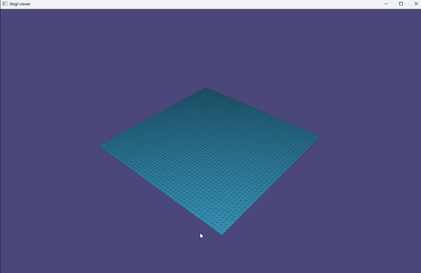
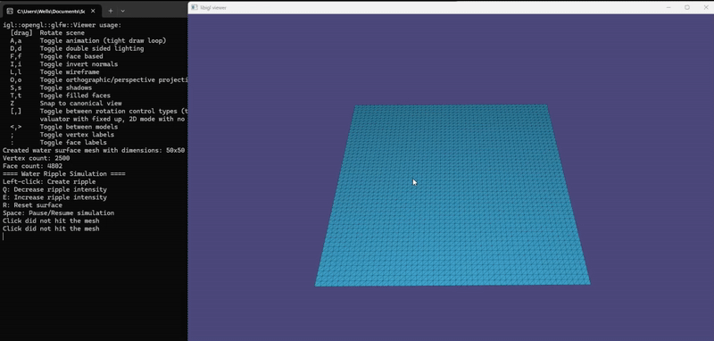
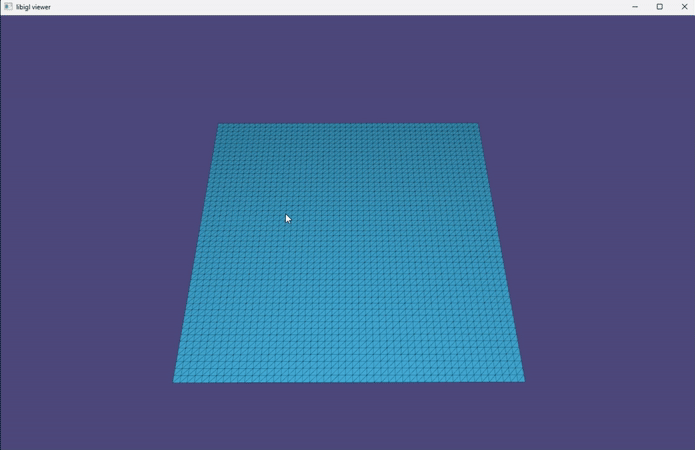
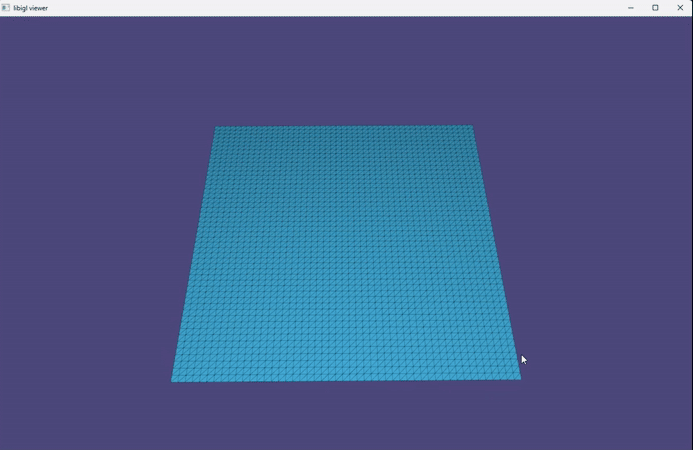

Project Showcase
[A brief overview of the project and its purpose]
This project explores real-time water ripple simulation using Libigl, a powerful C++ library for geometry processing. By leveraging mesh deformation techniques, the project creates an interactive water surface that reacts dynamically to user input.

Project Overview
[A quick explanation of what the project does]
The simulation generates ripples on a 3D water surface when the user interacts with it. Waves propagate, interfere, and gradually fade, mimicking real-world water dynamics. The system balances computational efficiency with visual appeal, ensuring smooth real-time interaction.
How it Works
[A simplified explanation of the underlying mechanics]
The simulation is based on mesh deformation, where each ripple follows a damped sine wave model. When a user clicks on the surface, a disturbance is introduced, and the wave propagates outward. Superposition principles govern wave interaction, allowing them to add up or cancel each other out.
Key Features
[Key functionalities of the project]
At the start of this project, I set 5 objectives to guide my development process, each corresponding to one implemented feature. Here are each of those objectives and their corresponding features.
1. Implement a deformable mesh plane to serve as the interactive water surface
[Everything starts somewhere]
My first objective was to create a simple mesh plane that would represent the water surface. The mesh is deformable, allowing the user to interact with it and eventually create ripples. Libigl's mesh data structure made this task straightforward, allowing me to define a grid of vertices and faces - a simple but crutial first step.
2. Generate and animate ripples using a wave function when the user clicks on the surface
[The first ripple]
Clicking on the water surface generates ripples that expand outward dynamically. The simulation responds in real time, creating a visually engaging effect. Ripples move across the surface smoothly, following a damped sine wave model.

3. Implement smooth ripple decay so waves gradually fade instead of disappearing instantly
[Realism and aesthetics]
Ripples gradually fade over time instead of disappearing abruptly, mimicking how water waves naturally lose energy. The linger time can be adjusted in the code to create longer, more persistent waves or shorter, quicker ripples.

4. Allow user control over ripple intensity (e.g., pressing "Q" decreases ripple size, "E" increases it)
[Giving them a choice]
The user can adjust ripple strength using simple keyboard controls (e.g., "Q" to decrease and "E" to increase), allowing for different wave behaviors. Every click increments the ripple intensity by 0.1, logged in the console, ranging from 0.1 to 3.0.
5. Simulate realistic ripple interactions, where overlapping waves add up or cancel out
[Constructive and disctructive interference]
Overlapping waves interact with each other, creating interference patterns that enhance the simulation's realism. Two waves can either add up constructively, creating a larger wave, or cancel out destructively, resulting in a flat surface.
[Bonus] 6. Allow users to pause the simulation in order to better observe interactions
[Adapting during development]
Pressing the spacebar freezes the ripples, letting users analyze wave interactions more closely without them disappearing too quickly. This feature was added during development to enhance the user experience as it was difficult to find a sweet spot between ripple realism and observability. The ability to pause served as a compromise, allowing users to study the simulation at their own pace while keeping the ripples at a realistic speed.
Challenges & Improvements
[Obstacles faced and potential enhancements]
One challenge was ensuring accurate mouse interaction with the mesh, particularly when the camera moves. Future improvements include fixing this calibration issue, adding adjustable decay speed, and exploring GPU-based wave computation for better performance.
Conclusion & Future Work
[Reflections and possible improvements]
This project successfully simulates interactive water ripples, demonstrating real-time mesh deformation. Future work could explore advanced wave physics, normal mapping for more detailed rendering, and user-controlled environmental effects like wind or depth variation.